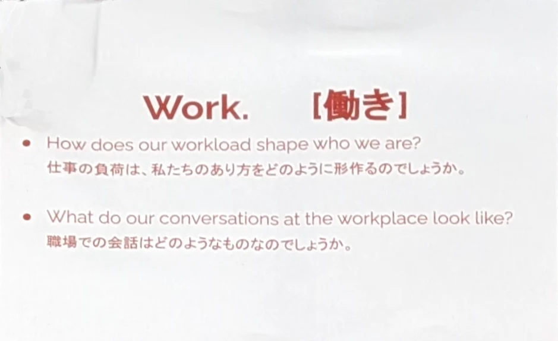
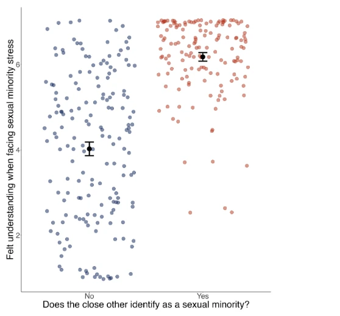
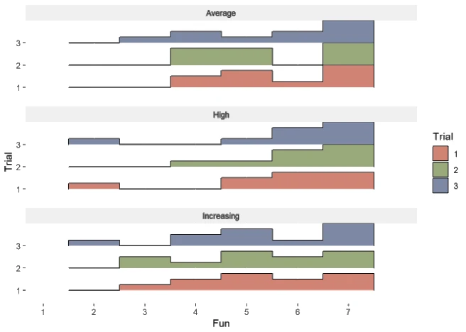
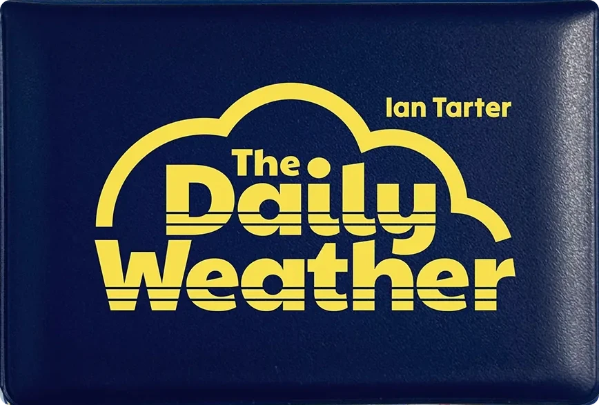

UX researcher, data analyst. I unearth what people need, then take it to the finish line.
Ian Tarter

Ian Tarter
Carnegie Mellon MHCI, 2027
Case studies

EXACT Sports, 2026
Reimagining the Combine
How interviews with coaches helped me build an AR app that replaces pen-and-paper testing at athletic events.
- Coach interviews
- iOS + AR build
- Usability tests

Embodied Cognition Lab, 2025–26
An Unorthodox Approach to Language Learning
How I worked to help design and pilot a role-playing workshop to help language learners get comfortable making mistakes.
- Workshop design
- Pre/post surveys
- Pilot study

BIRDS Lab, 2025–26
Unpacking Allyship
What I took away from analyzing and running studies about the nature of how to best help people recovering from minority stress.
- Survey build
- Qual coding
- Data viz

Beyond Predictive Processing in Play
- Literature review
- Controlled experiment
- Bayesian analysis
About
I'm finishing Carnegie Mellon's Master of Human-Computer Interaction in August 2027. Before that, I studied Cognitive Science at Carleton College, with a minor in Data Science and Statistics. I worked in three labs there, immersing myself in research about embodied cognition, relationship science, linguistics, and produced several studies and papers in collaboration with researchers from Kyoto University, Northwestern, University of Chicago, Wellesley, and Carleton College.
I have also been designing board games for over a decade. My first public release, The Daily Weather, published by Button Shy Games, raised over $29,000 from 1,800+ backers on Kickstarter.
Currently: Building My Offset, a tool to mitigate environmental harm.
Also collaborating to build products that respond to AI harm, better track airport systems, and mitigate bias in first-time managers.
Experience
Summer 2026
UX Engineer Intern
EXACT Sports
Field research with coaches, then designed, built and tested an iPhone app that measures athletes with AR and computer vision.
Summer 2026
UX Intern
SayKid
Designed, tested and built voice apps in Voiceflow for ToyBot, a learning toy that kids can have a conversation with.
2025–26
Research Assistant
BIRDS Lab
Analyzed, designed, ran, and wrote about studies covering relationship science, with a focus on LGBTQ+ experience.
2025–26
Research Assistant
Embodied Cognition Lab
Helped design a role-playing language workshop, ran pilots, led their feedback sessions, co-wrote research papers.
2024–25
R&D Intern
WizKids
Evaluated sell sheets, produced manufacturing spreadsheets, built company reports, prototyped and playtested upcoming products.
Summer 2024
Data & Operations Intern
EXACT Sports
Built staffing algorithms, coordinated with coaches to staff and maintain camps across the country.
Skills
- Research
- Interviews, field observation, usability testing, surveys, experimental design, qualitative coding, A/B testing
- Data
- Python (pandas, NumPy), R (tidyverse, Shiny), SQL, regression, Monte Carlo simulation, data visualization
- Design & build
- Figma, prototyping, Swift and SwiftUI, ARKit and Vision, Voiceflow, Git and GitHub
- Strategy
- Market and competitor analysis, revenue modeling, presentations
Games
The Daily Weather

- Players
- 1
- Time
- 10 min / day
- Audience
- Casual
- Style
- Morning puzzle
- Status
- Published
- More
- Case study
A pocket-sized 18-card game with 7 years of unique puzzles. You can buy it now from Button Shy for $15.
Asterion
[Photo of the prototype]
- Players
- 1
- Time
- 20 min / run, 20 hour campaign
- Audience
- Strategy
- Style
- Puzzly narrative campaign
- Status
- Early
- More
- [Sell sheet]
Uncover the mysteries lying in the minotaur's labyrinth by reconstructing the labyrinth and investigating an archeologist's lost notes.
Superlatives
[Photo of the prototype]
- Players
- 3–8
- Time
- 15 min
- Audience
- Family
- Style
- Groupthink
- Status
- Mid
- More
- [Sell sheet]
A cooperative word-guesser where players vote on which word is the easiest to flip with a spatula, makes the best mascot, is the hardest to pronounce, and more!
Alphabet Soup
[Photo of the prototype]
- Players
- 2–4
- Time
- 20 min
- Audience
- Strategy
- Style
- Trick-taker word-maker
- Status
- Late
- More
- [Sell sheet]
Work together with a teammate to construct words from tricks and sabotage the other team's words.
Contact
I'm looking for full-time UX research and human-centered data roles starting after I finish at Carnegie Mellon in August 2027. Also feel free to reach out and ask about any of my games!
- Emailitsian123@gmail.com
- LinkedInlinkedin.com/in/ian-tarter
- Resumeiantarter.com/resume